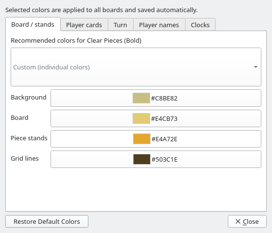
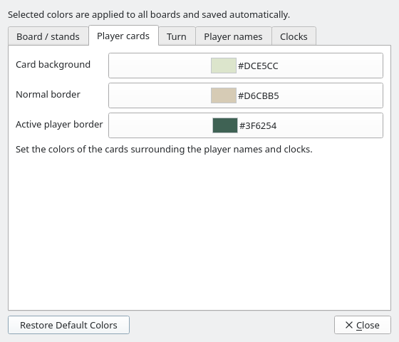
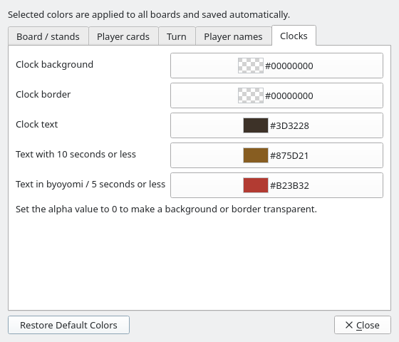
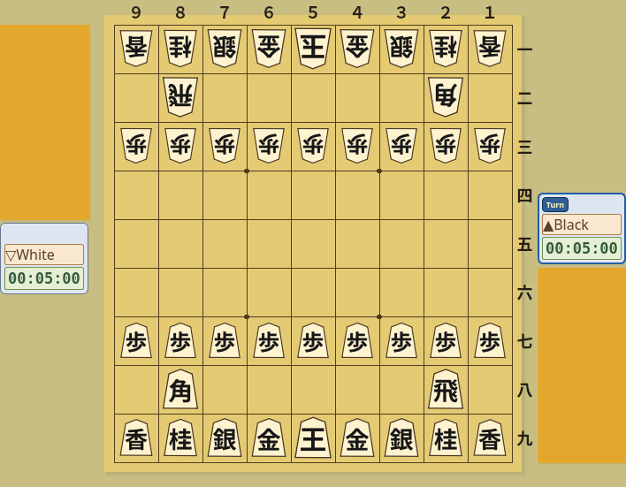
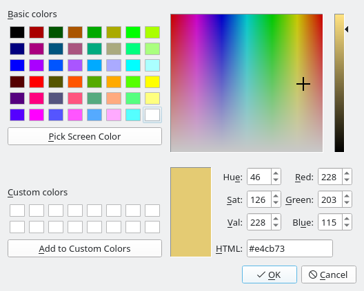

Board Colors
Choose colors that complement your pieces and make the board your own
Screenshots were captured on Linux with the English interface.
Open the Color Settings
Choose View → Board Colors… from the menu
The Board Colors dialog has six tabs: Board / stands, Player cards, Turn, Player names, Clocks, and Appearance. Choose a coordinated appearance, then adjust individual colors in the other tabs. Each color button displays a sample and color code.


Board / stands tab: recommended palettes and four board colors
Wooden Board Appearances
The Appearance tab coordinates the board, stands, pieces, and player cards.
Kaya and tatami combines pale wood with a muted green background. Ink and kaya pairs a light board with a dark green background. Amber uses warmer wood colors. New installations default to Kaya and tatami with Standard Pieces, using wooden Mincho artwork. Saved colors are preserved; retired piece selections migrate to Standard Pieces.
Wood grain and piece shadows can be toggled independently, and piece size can be adjusted from 90% to 112%. Selecting an appearance applies all its colors, wooden pieces, grain and shadows, and a piece size of 108%. Reset to Default Colors only resets the colors.
Settings are saved and shared with variation boards, tsume previews, and exported board images. The light and shadow direction stays fixed when the board is flipped.
Choose a Recommended Palette
The Board and Stands tab offers five shared palettes for all piece styles, each with a preview: Moss Garden, Walnut, Linen, Deep Forest, and Rock Garden.
Selecting a palette applies the background, board, piece stand, and grid colors together. Player card, turn indicator, name, and clock colors are preserved.
Customize Turn Indicators, Player Names and Clocks
Use the tabs to choose backgrounds, borders and text colors. The same settings apply to both players.
| Tab | Available colors |
|---|---|
| Player cards | Card background, normal border, and active player border |
| Turn | Turn badge background, border, and text |
| Player names | Name background, border, and text |
| Clocks | Clock background, border, normal text, text with 10 seconds or less, and text in byoyomi or with 5 seconds or less |


The active player border surrounds the entire card and moves to the other card when the turn changes. It is separate from the turn badge border. While a time warning is active, the clock uses the warning text color instead of the normal text color.


Player cards: choose the background and normal and active borders


Clocks: choose background, border, text, and time warning colors
By default, name and clock backgrounds and borders are transparent so the card background shows through. Set the alpha value to 255 for an opaque color, 0 for transparency, or an intermediate value for partial transparency. Turn badge backgrounds and borders also support transparency.


Example: set player card, turn badge, name, and clock colors separately
Adjust Individual Colors
Start with a recommended palette and change just the colors you want
Click the Color Button for the Item You Want to Change
| Item | Area Affected |
|---|---|
| Board Background | The background around the board and piece stands |
| Board | The playing surface where pieces are placed |
| Piece Stands | The stands holding captured pieces for Black and White |
| Grid Lines | The lines separating squares on the board |
Choose and Apply a Color
Choose a color in the color picker and click OK to apply it. Clicking Cancel leaves that color unchanged. If the four board colors differ from the recommended combinations, the palette list shows Custom (individual colors). Changing only player information colors preserves the selected palette name.


Color picker: select a swatch or enter a color code
Saving Settings and Restoring Defaults
The selected colors apply to all boards and are saved automatically. They remain in effect after you close the dialog and the next time you start the application. The dialog size and last selected tab are also saved.
Click Restore Default Colors to reset all 18 board and player information colors while keeping the current piece style. You can also save an image of your customized board with Image Export.